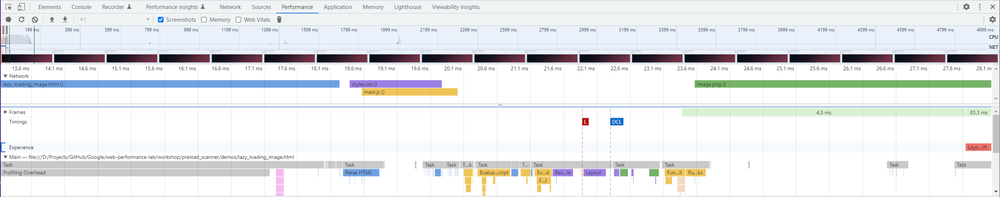

Summary:
Lazily loading images defers their loading until they are about to be visible, but they are not pre-loaded in parallel.
Implications:
Lazy-loaded images are not detected by the preload scanner and are not included in the parallel loading process.
Considerations:
Developers should carefully balance lazy loading and pre-loading based on performance goals and resource optimization.
Screenshot:
